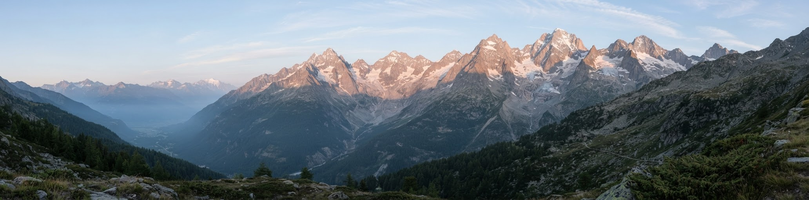

A photo tag is a short label on a photo: dark glass (--color-scrim-strong) with bone text, so it reads on any picture in either theme. It names what the photo is (the map and its facts) or how long a class runs. It is not a button and not a status badge; for status use a badge or a pill.
The .photo classes that the tag sits on are documented here too: a photo always fills its box (object-fit: cover) and has a muted variant for locked content.
Photo variants: --locked (40%, grey: locked map tiles), --dim (50%, grey: available for a quieter reward thumb), --yt (crops a 4:3 YouTube cover to its 16:9 picture).
.photo--yt is a photo modifier, not a tag: YouTube’s hqdefault cover is 4:3 with letterbox bars, and object-view-box: inset(12.5% 0) shows only the 16:9 picture, as the player will. See video.
One size. The label is 12px/16px with 4px × 8px padding (24px tall); the time tag is 14px numerals with 0 × 6px padding (20px tall). Never scale a tag with the photo: on a 144px class cover and on a 640px hero it is the same size.
Old Town Criterium · 14.2 km · Easy30:00
Label 24px tall · time 20px tall
HTML
<span class="photo-tag">Old Town Criterium · 14.2 km · Easy</span><span class="photo-tag photo-tag--time">30:00</span>
Tags are not interactive. Their “states” are the photos they sit on: the glass keeps them readable on the brightest and darkest pictures in the catalogue and on a locked (greyed) photo.
Photo tag on photos
Tag
Bright photo
Dark photo
Locked photo
Default / hover / focus / active / disabled
Label
Prairie Paceline · 18.4 km · Easy
Neon Docklands · 21.6 km · Moderate

Col du Granit · 16.1 km · Brutal
Not interactive
Time
20:00
28:30
1:00:00
Not interactive
Both themes
The tag is theme-independent: identical in both. Only the surface around the photo changes.
Tags never wrap: a label longer than the photo minus 24px is too long. The Next ride photo is 16:7 and at least 192px tall; its label fits at 328px wide.
640px
Class teaser cover grows from 144px to 176px; the time tag stays 6px from the corner.
1024px
The Next ride photo becomes the left 3fr column and drops its ratio; the tag stays top left.
Reads --color-scrim-strong and --color-on-photo, both theme-independent, because the photo does not change with the theme. Do not swap in --color-panel: in light that would be a white box on a photo.
Plain text in a <span>. The photo beneath is decorative (alt="") when the tag or a heading names it, and informative when it carries content, as a class cover in the player does (“Video: 30 Minute HIIT Cardio, GCN Training”). (APG Names and descriptions)
Keyboard
Key
Action
Tab
Tags are skipped; they are read as part of the card in reading order.
Focus
Never focusable. When the card around the photo is a link, the ring wraps the card, not the tag.
Labelling
A time tag reads “30:00” out loud as “thirty, zero zero” in some screen readers; inside a card whose name already says “30 Minute HIIT Cardio” this is acceptable. When the duration is the only place the length appears, add a visually hidden “30 minutes”.
Contrast
Light theme
Tag text on glass (worst case: glass over a white photo)
Lock icon on a greyed photo
Dark theme
Tag text on glass (worst case: glass over a white photo)
Lock icon on a greyed photo
Motion
None. A class card scales its photo 1.03 on hover; the tag does not move with it because it is positioned on the cover, not the image.